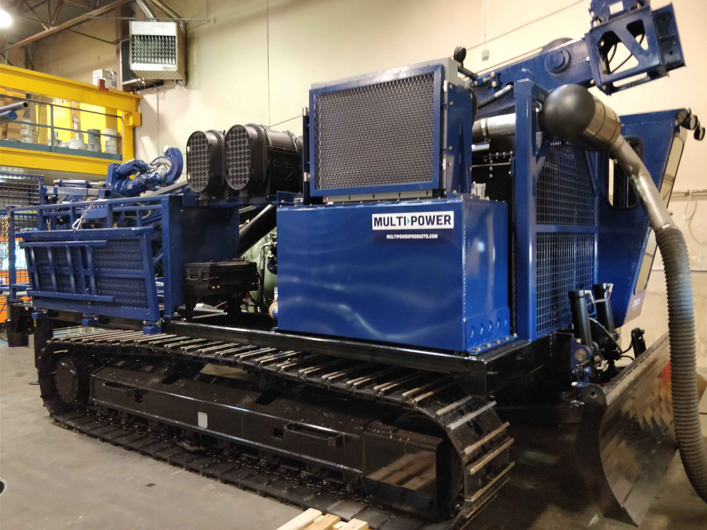

I have recently decided to move back to Canada to work as a Field Supervisor. I have worked for this company before. So I know I will enjoy it. It is a civil consulting company. It will be new roads and new developments that are being built. I will be on site to make sure the contractors build to specification. Along with this there are usually third party Engineering firms that will do a geotechnical test. I will have to be on site for this test to record and document it.
My previous job I worked at a manufacturing facility doing sales. Mainly sales in Hydraulics, Industrial equipment and drilling tooling. It had some technical aspects to it. I would draft up hydraulic schematics for different production projects and sales projects. I attended a two day hands one hydraulic course in Red Deer. I definitely learned a lot. I am hoping to continue in this industry as well.
